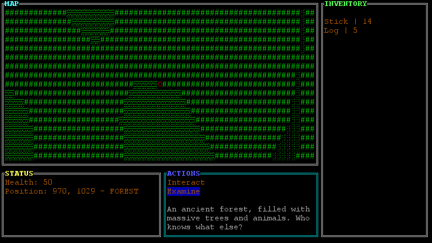

In development limbo as of 21/04/2020. Written in Java with the use of the Lanterna library (which can be found here). It is meant to emulate the rough visual appeal of semi-graphical video games from the 1980s. Screenshots of the game (in development) are below. Its style is roughly inspired by Dungeons and Dragons, Daggerfall, Runescape, and Minecraft.
